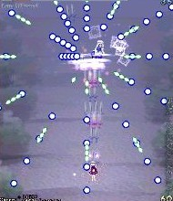
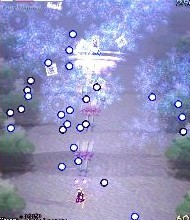
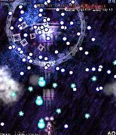
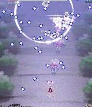
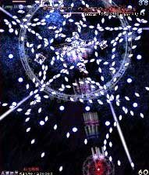

まずは全方向に固定弾を撃ってくる。正面の弾をカスるようにして避けると楽。
続いて霧を放出した後、青弾を放つがコレはちょっとランダムっぽいので良く見て避けよう。

さっきの霧が出た後に青弾が出てくる攻撃の応用みたいなもの。
今度はレティが水色の弾も撃ってきて、更に霧が色んな所に発生する。
霧の出てきたところから青弾が放出される。
水色弾は見た目ほど当たり判定は大きくないので、それにカスりながら避けるのが良いかと思います。

これも最初の通常攻撃の霧が出た後に青弾がくるやつとほぼ同じ。
前の攻撃(リンガリングコールド)後に出てくるアイテムはすばやく取らないと、 白いレーザーに被弾する危険が出てくるので注意。

弾の密度が濃くなってビックリするかもしれないけど完全に固定弾（毎回同じ弾が同じ弾道で来る）なので何回か練習しよう。
右下と左下のレーザーに気をつけながら弾と弾の間隔が広い所で撃ち込むのが無難。